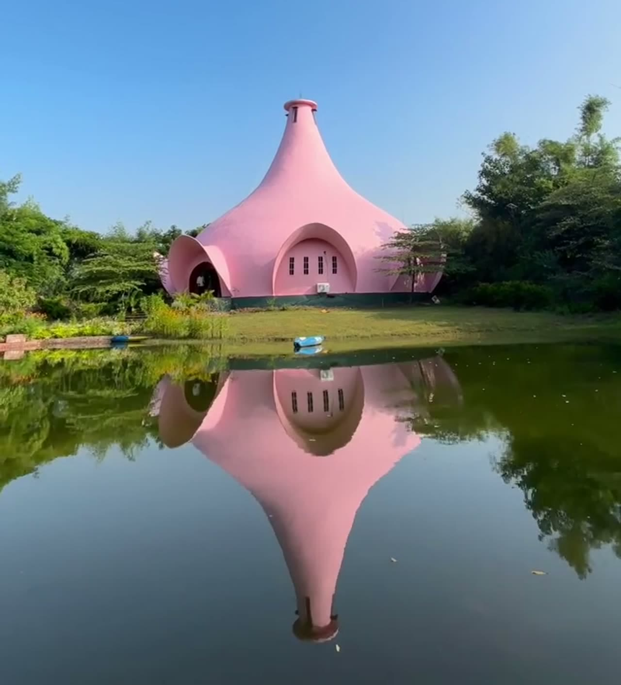
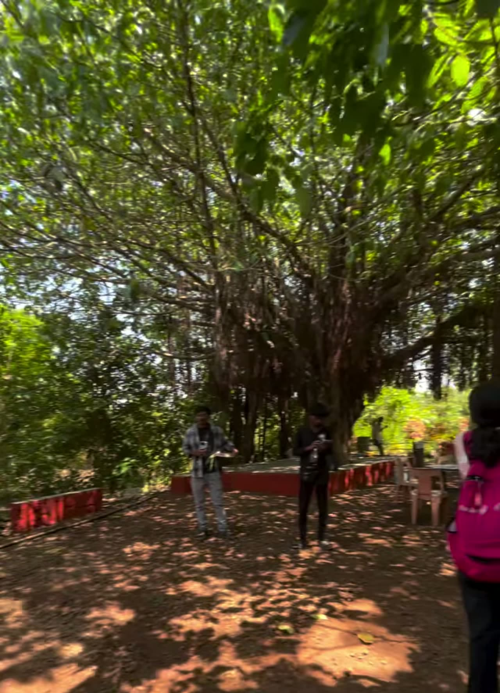
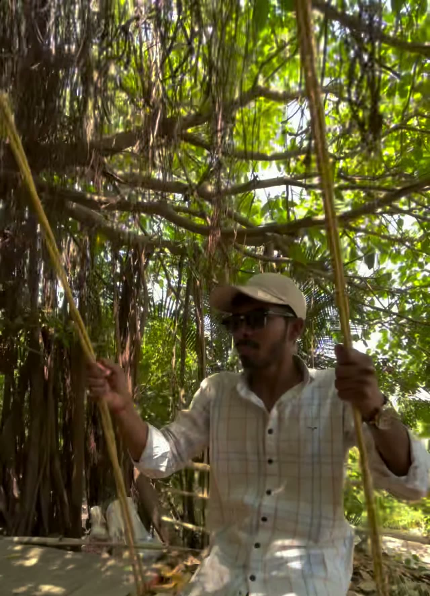

Nature & land
Agri-walks, eco-tours and time in the nursery — the rural landscape as teacher.
Prerna Tirth · प्रेरणा तीर्थ · Maitri Hills, Maharashtra
Prerna Tirth is an open, community-driven initiative bringing people together through nature, shared experiences, reflection and learning — in the Sahyadri foothills near Kadus–Rajgurunagar, Pune district.

Our story
Prerna Tirth brings people together through nature, shared experiences, reflection, learning and human connection. Its public expression is simple:
Inspire. Connect. Transform.
Step away from the pressures of everyday urban life. Encounter new perspectives, spend time with people and place — and carry home reflection, learning or a renewed sense of direction.
Working narrative from project documentation; official mission wording awaits stakeholder confirmation.

Philosophy
One connected journey, not three separate promises. Transformation is an invitation — never a guaranteed outcome.
Encounter nature, reflection and new perspectives — curiosity and possibility, not instant change.
Shared meals, open conversation, eco-tours, group activities and learning sessions — with people and with place.
Reflection, learning, a mental reset — whatever you take away is yours. Grounded, without therapeutic claims.
“छान छान मी क्षणोक्षणी प्रत्येक क्षणी 🌿”
“Beautiful am I, in every moment, at every second.” — presence and self-acceptance, from the working philosophy document. Preferred wording and translation to be confirmed.
Experiences
Activities documented in the project's working papers. Availability, schedules and access conditions are not yet confirmed — treat this as a preview, not a catalogue.
Agri-walks, eco-tours and time in the nursery — the rural landscape as teacher.
Simple vegetarian rural meals, shared — connection over a thali, not a menu.
Swimming pool, boating, indoor and outdoor sports, tractor rides — joy counts too.
Thoughtful discussion: rational thinking, nature, social issues, mindful media use — including youth gatherings.

Prerna Tirth holds two things at once: quiet learning and candid, playful community moments. The site is neither a solemn retreat nor a commercial resort — it is a place where both belong.
Past gatherings on record include “सोच”, a youth camp held at Maitri Hills in May 2025 (as described in working documentation — names, partners and figures pending confirmation).
The place
The philosophy, the community, the learning and the shared experiences — the why.
The physical setting near Kadus–Rajgurunagar, Pune district — farmland, lake, halls and open ground in the Sahyadri foothills — the where.
Two names, two roles — deliberately not interchangeable. Exact operational relationship to be confirmed with stakeholders. This is not a booking page: no prices, hours or reservations are published in this prototype.
Join · Connect
The joining process is still being defined — so this prototype collects nothing and promises nothing. The one verified public channel is Instagram.
Follow @preranatirthHandle recorded in project documentation; confirm it is the official channel before launch. No contact details, forms or registration exist yet by design.